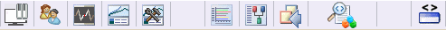
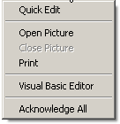
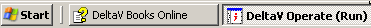
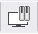
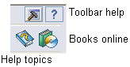
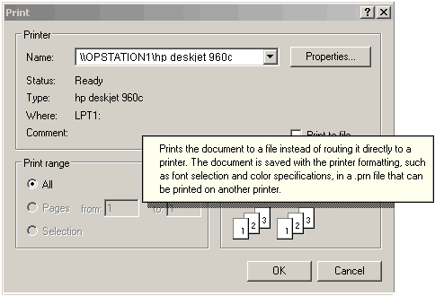

DeltaV software overview
DeltaV system software includes a variety of applications to help you operate and optimize your process. The primary applications used by operators are DeltaV Operate, Batch Operator Interface and Batch History View (for batch applications), Process History View, and Diagnostics.
Most operators will access DeltaV Operate through FlexLock, a security program that allows access to DeltaV Operate and prohibits access to other software without the proper authorization.
There are several other ways to start an application, dependent upon the restrictions and privileges associated with your user name and how the application is configured. From the Microsoft Windows desktop, an authorized user can click Start (in the lower left corner of the screen), point to DeltaV, point to the category, and click the name of the application.
Many applications allow quick access to other DeltaV applications through buttons on their toolbars and through an Applications menu. The example below shows toolbar buttons in DeltaV Operate (run mode) that allow access to other applications. Not all the buttons may be available on your system, depending on how your application was configured and the access privileges assigned to you through the DeltaV User Manager.

Computer Terminology
This section provides definitions for a few computer terms that you will need to know to use the DeltaV System. Refer to a computer dictionary that you can find at any good bookstore for a more complete list of terms. In addition, many computer dictionaries such as Whatis.com (http://www.whatis.com) can be found on the World Wide Web.
Computer - In the DeltaV System, computers communicate with the controllers to provide operators access to the control loop faceplates, trends, diagnostics and alarms generated by the process control strategy. The computer is sometimes referred to as the Central Processing Unit (CPU). The CPU is the area inside the computer that contains the logic circuitry that performs the programs' instructions.
Monitor - The monitor displays the pictures and information for the operator. A cable (in the back of the monitor and computer) connects the two. The monitor is sometimes referred to as the screen or the Cathode Ray Tube (CRT).
Mouse - The mouse is used to point to data on the monitor, select the data, and to drag pointers on faceplates in order to make a change in a setpoint or output. Typically, you move the mouse across a flat surface called a mouse pad and watch the monitor at the same time. To select data, place the mouse pointer over the data and click the left mouse button once. Clicking the mouse button once is called a single click.
Keyboard - The keyboard is used to enter data into the DeltaV System. The keyboard looks similar to a typewriter and consists of letter keys, number keys, and command keys. The command keys are often used in conjunction with the letter and number keys. Usually, numbers and letters that you type at the keyboard are displayed on the monitor.
Printer - The printer is a piece of hardware that connects to a computer. It transfers electronic data onto sheets of paper called a printout. The layout and format of the printout is determined by printing software.
Modem - The modem connects computers over telephone lines. A modem can be inside the computer or outside connected to one of the serial ports on the back of the computer.
Software - The software is the written instructions that tell the computer what to do. In the DeltaV System, the software is written in such a way that you use the mouse more than the keyboard. You use the keyboard to enter numbers and the mouse to select from lists of possible entries. DeltaV Software is written for two types of users: engineers and operators.
Login - This term refers to entering a user name and password into the DeltaV System to access the programs and functions to which you have privileges. You must log in whenever the system is restarted, when you first start using the system on your shift, or whenever you are trying to make a change in the system and your user name is not showing in User Window.
User Name - Your user name is your identification that is assigned to you by the engineers. Generally, a user name is unique for each individual user, however it can be shared by all of a shift or by all users with the same job function. User name appears in the Login pop-up window as you log in and in DeltaV Operate.
Password - Your password is used in conjunction with your user name to prove to the system that it is really you logging in. Generally, a password is unique for each individual user, however it can be shared by all of a shift or by all users with the same job function. Unlike the user name that appears on the Login window as you type it in, the password appears as ********* . Like your user name, your password is assigned to you by the engineers.
FlexLock - This is a security program that allows access to DeltaV Operate and prohibits access to other software without the proper authorization. FlexLock is enabled when the DeltaV Operator Consoles are started.
Mouse Skills
It is helpful to know how to use the mouse to select or "click" objects and how to work with various types of windows. There are usually two mouse buttons: a left and a right mouse button. There are three ways to select or click (quickly press and release) the mouse buttons: single-click, double-click, and right-click.
Single-click - This is the most common type of clicking in the DeltaV System. Move the mouse pointer to the item on the monitor that you want to select and quickly press and release the left mouse button once. This usually causes a pop-up window to appear. A pop-up window opens (pops up) in front of all currently open windows. For this reason, pop-up windows are well suited to show alarm messages, control panels, toolbars, or menus.
Double-click - Move the mouse pointer to the item on the monitor that you want to select, and press and release the left mouse button twice in rapid succession. Do not move the mouse between clicks. Double-clicking is not used as often as single-clicking in the DeltaV System.
Right-click - A right mouse click opens a pop-up window of commands that are available for the item that is selected. Move the mouse pointer to an item on the monitor and press the right mouse button once to open a pop-up window of commands. Not every item has a list of commands available through a right mouse click. This picture shows a list of commands that are available through a right mouse click in DeltaV Operate.

Selected Items - DeltaV Operate displays a single-line box, a double-line box, or a thick-line box around a selected item.
Working with Windows
You have a great deal of control over the size, shape, and position of the windows on your monitor and many options for moving between windows and selecting windows. The best way to learn what you can do with your windows is simply to experiment. This section provides a few tips to help you to get started experimenting with your windows.
Selecting One of Many Windows
It is possible to have several or many windows active at any one time sometimes making it difficult to find the window you want. There are several ways to move between windows: use the taskbar, a keystroke combination, and drag a window by the title bar.
Taskbar
The Taskbar runs along the bottom of your screen. To switch between open windows, click the button on the Taskbar that represents the window that you want to open. For example, this picture shows how to open DeltaV Operate by clicking on its button on the Taskbar.

Another way to open a program from the Taskbar is to click the right mouse button on the Taskbar button and select Restore.
Alt/Tab
Often you can use combinations of keystrokes to perform a function. An easy way to move between active windows is to first press the Alt key, and hold it down as you press the Tab key. A pop-up window with a row of small pictures called icons opens. Icons are used to represent programs and in this case the icons represent your active programs. Hold down the Alt key and press the Tab key to cycle through the active program windows. Notice that a thick line box appears around an icon each time you press the Tab key. This is the selected program window. (The name of the selected program also appears at the bottom of the pop-up window.) Release the Alt key to open the selected program.
Dragging a Window by the Title Bar
Sometimes you can have windows stacked one on top of another so that even though you know a window is open, you cannot see it. When this happens, you can select the top window and drag it off to the side so that you can see the window behind it. To do this, move the mouse pointer to the top of a window. (If the mouse pointer turns into a two-headed arrow you've gone too far.) Click and hold down the left mouse button and drag the window up, down, or to each side to expose the windows behind it.
Resizing Windows
You can resize the height and width of windows. Move the mouse pointer to an edge or corner of the window and stop moving it when it becomes a two-headed arrow.
|
When you are... |
The pointer looks like this... |
|---|---|
|
on the top or bottom edge of the window |
|
|
on either side of the window |
|
|
at a corner of the window |
Click the left mouse button and drag the window up or down to resize it horizontally, left or right to resize it vertically, and diagonally to resize it proportionally.
Minimizing and Maximizing Windows
In the upper right corner of your windows are the minimize and maximize buttons . Click the minimize button, , to close the window and reduce it to a button on the Taskbar. (Remember, you click a button on the Taskbar to open a window.) Click the maximize button, , to maximize the window to completely fit your monitor's screen. Notice that after you maximize a window, you have a new button in the left-hand corner, . This is the restore button. Click the restore button to restore the window to its original size before you maximized it. There is one other button in the right-hand corner and that is the quit application button, . Be careful with this button. It works the same way as the command. If you click it and you have unsaved changes in your picture, a pop-up window opens asking you if you want to save the changes. Click Yes to save the changes, click No to close without saving the changes, and click Cancel to keep the application open.
Logging In and Out
You can log in to DeltaV software from a system that is up and running and from a system that has been powered down.
Logging In from a Running System
Follow these instructions to log in from the operator screen.
Move the mouse pointer to the User name area, click the down arrow to expand the drop-down list, and select your user name. In the picture above, the user name is ADMINISTRATOR.
Move the mouse pointer to the Password area, click the left mouse button, and carefully type in your password. For security purposes, bullets will appear instead of the actual password characters.
Move the mouse pointer to the OK button and click the left mouse button.

Logging In from a Powered Down System
Follow these instructions to log in from a system that is powered down.
Be sure that the monitor is turned on. Look for the green light, usually on the bottom right side of the monitor, that indicates that the monitor is on. If the monitor is not on, press the large button on the bottom of the monitor to turn it on. (This button usually has an image that looks like this next to it.)
Press the Power button on the computer to start the computer. The Power button is usually above the Reset button and is larger than the Reset button.
Different screens will start to appear on the monitor. Do not press any keys until you see a popup window that says "Press CTRL+ALT+DELETE to log on."
On the keyboard, press and hold down the Ctrl key and the Alt key. Keep these keys held down, press the Delete key, and then release all three keys at the same time.
A pop-up window opens asking for your User Name and Password. (This is for logging into the Windows operating system.)
Move the mouse pointer to the User Name area, click the left button and enter your user name. Move the mouse pointer to the Password area, click the left button and enter your password. For security purposes, asterisks (****) will appear instead of characters).
Click the OK button and wait for the DeltaV Logon dialog box to open.
Move the mouse pointer to the User name area and select your user name. In the picture above, the user name is ADMINISTRATOR.
Move the mouse pointer to the Password area, click the left mouse button, and type in your password.
Click the DeltaV Operate button to start DeltaV Operate.
Logging Out of DeltaV Operate
Click the Login toolbar button on the top of the operator screen.
The DeltaV Logon dialog box opens.
Click the Logoff button on the DeltaV Logon dialog box.
Getting Help
All of the DeltaV help is online. This means that the help is in
electronic format and is only a mouse click away. You can access toolbar help
from a button on the toolbar. You can also open the Tracebox tool from the
toolbar. The Books Online icon is available on the DeltaV Utilities toolbar. To
open the DeltaV Utilities toolbar, click the


In addition, in the upper right hand corner of many dialog boxes there is a help button . This is a standard feature on most Microsoft dialog boxes and many DeltaV dialog boxes that allows you to get help on the dialog box fields. (This type of help is called context sensitive, pop-up, or What's This? help.) When you click on the help button, a question mark appears next to the cursor after you release the mouse button.
Drag the cursor to the field on the dialog box for which you want help and click the mouse button. A short description of that field pops up. For example, here is the popup help for the Print to file field on the Print dialog box.
